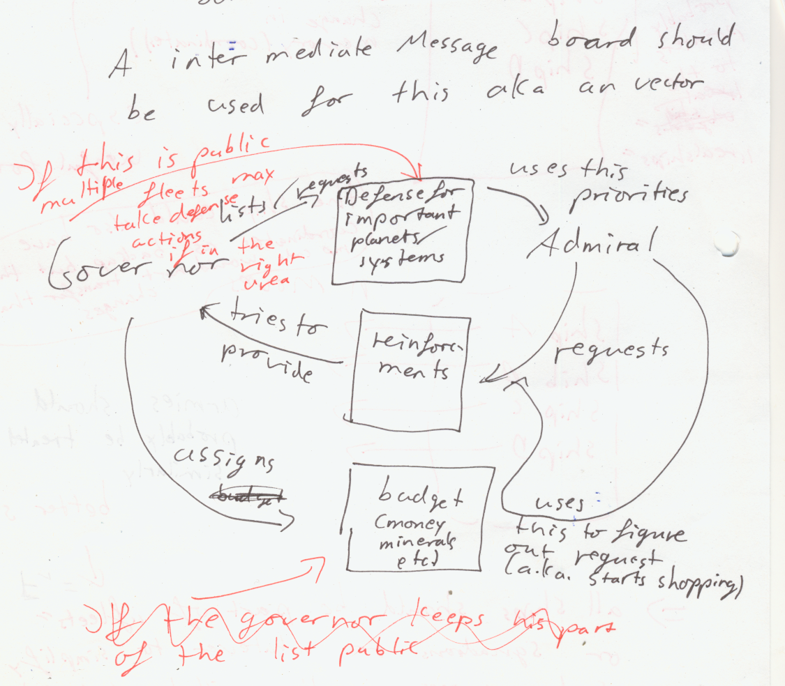

Artificial Idiot
Description
Sub AIs
AIs should give orders to inferiors, to use abstract goals and simplify the AI. This means AIs have to communicate and assist each other. E.g. A sector governor build facilities for a fleet to prepare an invasion or a fleet protecting the sector. (An intermediate message board was proposed) The superior should assign missions to an inferior. E.g. a fleet ordering a wharf to build a reinforcement ship. In the extreme case we get job assignment between the agents. The governor assigning defense posts and the admiral placing build orders. Both sharing part of allocated budgets with each other. So the governor gives the fleet admiral his resources to defend for example. In the best case this puts whole parts of the game on a decent autopilot.
Implementation
Pending
See also:
- I004